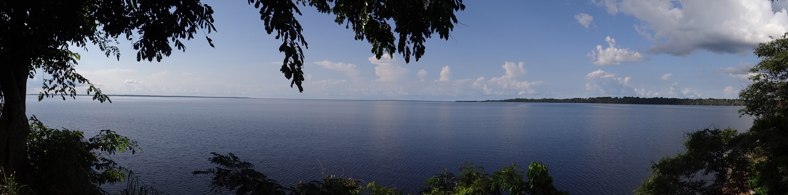

Why Mai Ndombe
With three pilot REDD+ projects and 20 logging concessions, Mai Ndombe is at the center both the REDD+ and industrial logging industry in DRC. The district covers a vast area equivalent in size to England and is home to over 1.7 million people
– most dependent on the forest for their livelihoods. In May 2015, The OpenMaindombe was launched to explore how FLEG and REDD+ initiatives could find practical approaches to building collaborative independent monitoring.
How it Works
OpenMaindombe is an open data community hosting a wide variety of maps, reports, and documents related to land use planning in the Mai Ndombe area. All of the mapping information, stories, and resources are free to download, use and publish
with appropriate attribution.
You will find map information on:
REDD+
REDD+ Pilot Projects Forest Investment Programme Intervention Zones CARPE REDD+ landscapes Wildlife Works Carbon ERA Project layers WWF DRC Maindombe Project layers
Logging
Logging Concessions
Logging Roads
IMFLEG
Agriculture
Palm Oil Suitability
Agricultural Concessions
Communities
Village maps
Clan maps
Technology
This site was designed and built by Moabi. It is the first example of our “OpenMapHub” system, which allows our users to build customized microsites using map data provided by our users. OpenMapHub is an open source spatial database.
About Us
OpenMaiNdombe is currently being implemented by Forest Legality Advisory Group (FLAG) and Moabi in partnership with OGF and OSFAC. European Forest Institute provided funding and technical assistance.
Forest Legality Advisory Group
Civil society organization based in Yaounde (Cameroon), FLAG intervenes at the Central African scale (African Dense and Humid Tropical). It stands up for an African society in which the principles of good governance are applied in the field of forest resources management so that countries have the means to ensure the sustainability of their social, economic and ecological development.
FLAG is especially invested in promoting legality and transparency of the forest management. FLAG assists the national civil society organizations (CSOs) in the monitoring of compliance with laws and is directly involved in the analysis and dissemination of information related to forest management.
Contact details
Yaoundé, République du Cameroun - BP 2833
Tel (237) 22 22 18
Email : mailflag@flag-cm.org
Web: www.flag-cm.org
Moabi
Moabi is an nonprofit organization helping communities and organizations - both small and large - build transparency and accountability on complex environmental issues in some of the most remote and challenging locations on Earth. We are developing an
extensive suite of open-source, web-based tools to collect, organize, and distribute data on a wide variety of natural resource topics. We’ve helped to pioneer the use of OpenStreetMap – the world’s largest collaborative mapping project – to map natural resource issues in the Congo Basin. Moabi also provides technical training and support to Congolese civil society organizations on a wide range of topics including data collection,
mobile mapping, collaborative mapping systems, and other transparency technologies. The goal of our training is to strengthen the technical skills for local civil society to conduct their own monitoring.
OGF
OGF is a DRC environmental non-governmental organization created in September 2012 in order to perpetuate the work of Independent Observer conducted by REM (Resource extraction Monitoring) as part of the Project IMFLEG (2010-2012). OGF has been officially appointed as Independent Observer for the enforcement of the DRC forest laws and governance by signing a memorandum of understanding in 2013 with the Ministry of Forests (MEDD). This mandate runs until 2017. OGF operates throughout the whole of the Democratic Republic of Congo. All its activities contribute to the fight against the illegal logging and the promotion of sustainable forest management.
Contact details
12 étage, BCDC, Kinshasa-Gombe, République Démocratique du Congo
phone: (243)999910795
e-mail: ogfrdc@gmail.com
web: www.ogfrdc.cd
OSFAC
OSFAC was started following a 2000 meeting in Libreville that brought together representatives of forestry and mapping agencies from across Central Africa. At the meeting, participants recognized the important role satellite data and products play in
the efficient management of natural resources, but acknowledged there were many constraints to using satellite data in the Congo Basin. Participants proposed creating OSFAC as a regional forum to address these obstacles, which included: difficulties
associated with data acquisition, a lack of permanent training institutions and limited capacity to apply satellite information. OSFAC was launched as the GOFC-GOLD network for Central Africa under the Global Terrestrial Observing System (GTOS).
Since 2005, OSFAC is a Congolese NGO. Its primary objective is to support the management of natural resources and promote sustainable development by producing reliable land cover products, distributing satellite data, building capacity and
providing technical assistance to partners.